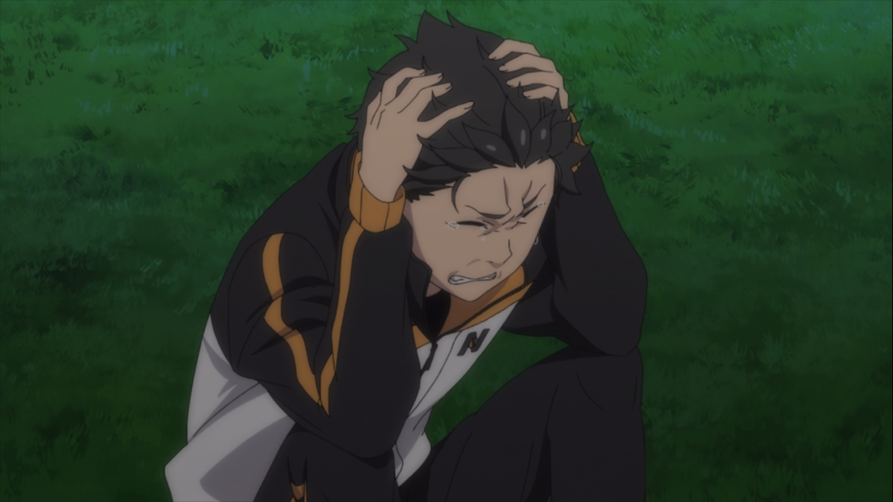

Subaru tends to not read the situations he encounters, ultimately
leading him to make irrational decisions, he is loyal to those he
holds dear, willing to help them, even if that means taking the thorny
path. Beneath his eccentric demeanor, however, Subaru is actually a
very insecure person suffering from a severe inferiority complex.